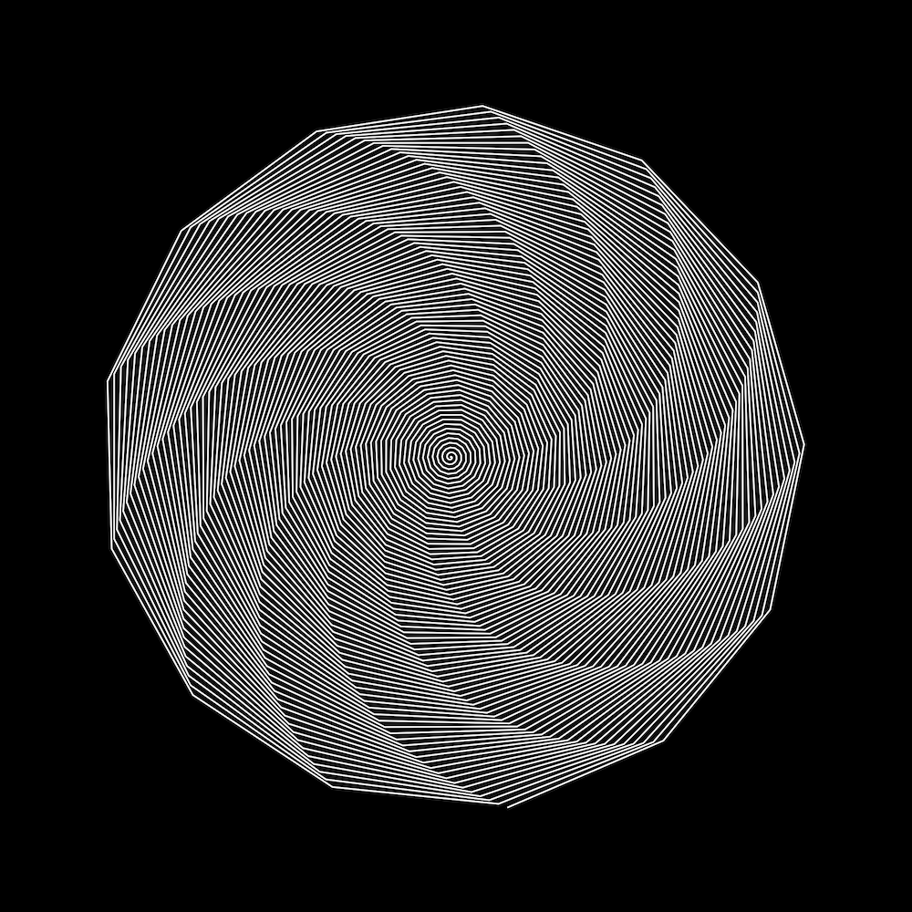
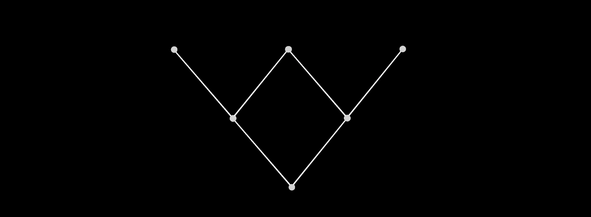

A tool that allows you to find similar users on twitter (using sentence embeddings applied to their bio) and a fractal search. It downloads who a user is following, then checks their bios for similar users, and if there are some above a threshold, it downloads users that user is following, and so on. View code here.
Twitter Fractal Similarity Search
Ongoing: A kind of parametric music algorithm. Complexity from simple rules. Music generated by exploring the search space of the famous molecular music box algorithm (made by Duncan Lockerby). Each rule you see (such as 8C1.5) generated the corresponding composition. Listen to samples below or here.
Music
On automating the process of automation. Read here
Cycles: Automating the meta-cycle of progress
Writing
If you'd like to hear more of my musical projects, you can listen to them here. (Leon Huene is my alias)
Molecular Music
Detail
Programmed a six degrees of separation tool for Twitter (see connections between 2 users) sorting pathways by how probable that pathway will get user 1 to user 2 (using psychology principles). View code here.
Six Degrees of Separation
Response Rate Visualizer
Programmed a data visualization tool to visualize response rates (from psychology) to uncover and identify schedules of reinforcement from text data (such as blogs or tweets). View code here.
Triplet Pattern
2007: I built a toy rocket in space camp.
2008: I made a radio transmitter and receiver for a science fair (it was too long ago to recall, but I doubt I designed a circuit)
2011: I built a pinhole camera in my art class using a shoe box and a copper sheet.
Fabrication Experience
Psychology
With some experience in:
Portfolio
Youssef Abdelmohsen
Ongoing: Merging psychological concepts like discriminative stimuli, operants, and reinforcement with vector spaces to create a map of scientific concepts/technology (using GPT-3 + sentence embeddings) to allow a person to discover useful scientific tools for specific problems they’re solving (specifically for circumstances they’ve never come across before). This project is explained in more detail here (prototype available).
Programming
Overview
